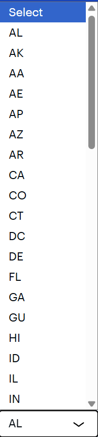

Bad UI Example
An example of the original interface to select a US state:

- Dropdown is long including all 50 states and other abbreviations for military postal
services
- Scrolling required in order to find each state
- Cannot see all states at once
- Hard to use on mobile devices
Improved UI Example
Select a state by typing or clicking a button below: